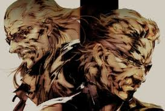
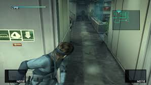
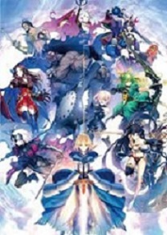
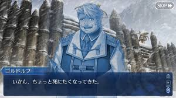
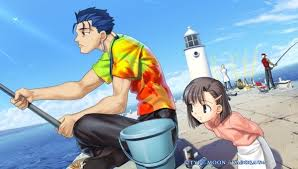

 
隠れることを基本とし、従来のアクションゲームが持つ、ジャンプなどの要素を強く併せ持ったゲームのことを言う。ステルスゲームが好きというよりはメタルギアシリーズが好き。小学生の時に月光を見たときは恐怖でしかなかった。ライジングが発売してその月光を切れるようになったおかげでトラウマを解消できた
  
原作は聖杯戦争と呼ばれる魔術師の儀式に巻き込まれた主人公と、彼と共に行動し、次第に恋愛関係となっていく3人のヒロインによる物語で、3つのルートから構成される。私はアニメから知ったが制作Ufotablaのfate/zeroが放送された時のアニメーションに驚愕した人は少なくないだろう。現在でもアニメの人気は衰えず、2020年に劇場版として上映される桜ルートの最終章が待ち遠しい。アプリゲームのFGOも人気であり、ツイッターの当時のトレンドランキングで「安室奈美恵さんの引退」を上回って「マーリン」が一位を独占していたり、10万リツイートチャレンジのために公式が投稿した二時間後には12万以上リツイートされており、知名度人気度ともに上昇中である